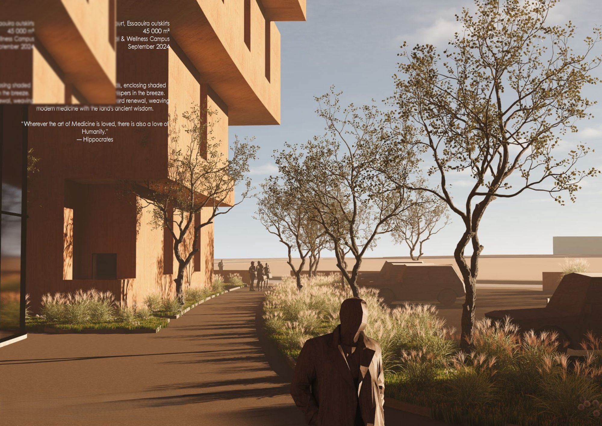

PRO · Healthcare
Tamansourt Campus
- Location
- Morocco
- Year
- 2024
- Studio
- Yassir Khalil Studio
- Type
- Hospital and Wellness Campus
- Surface
- 12 000 m²
- Register
- 08 of 12

A hospital and wellness campus on the outskirts of Tamansourt, a planned city in the Marrakech metropolitan region. The programme combines a general hospital, a specialist wellness centre, and ancillary support facilities on a greenfield site, with the master plan organised to allow phased construction while maintaining functional coherence at each stage.
The architectural proposal structures the campus around a central landscaped spine that connects arrival, administration, and clinical zones in a legible sequence. Patient wards are oriented to maximise natural light and ventilation while minimising solar gain in the summer months. The wellness centre is separated from the hospital by a planted courtyard, creating a clear spatial and experiential distinction between the two programmes. The project was developed by the team at Yassir Khalil Studio at feasibility and schematic design level, with full BIM coordination between architectural and engineering disciplines.
Drawings and images

Render, Campus Aerial
Fig. 2
Aerial render · Fan-shaped master plan · Curved hospital ward wings arranged around the central landscaped spine · Perimeter road with structured parking · Wellness centre separated from clinical zones by planted courtyard · Terracotta-toned facade system responsive to the Moroccan climate · Greenfield site within the Tamansourt planned development · Yassir Khalil Studio · 2024
Full size: Fig. 2, Render, Campus Aerial
Render, Street Facade
Fig. 3
Street facade render · Main hospital block · Rammed earth-toned masonry cladding · Deep-set windows reducing solar gain on east and west orientations · Stepped balcony volumes articulating the patient ward floors · Corner condition with exposed concrete structural frame · Glazed ground-floor entrance and waiting zone · Clear sky, arid landscape character of the Marrakech plateau
Full size: Fig. 3, Render, Street Facade